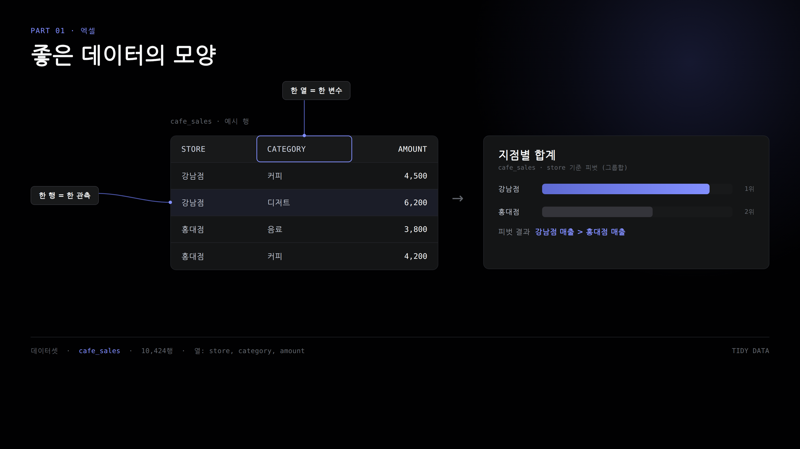
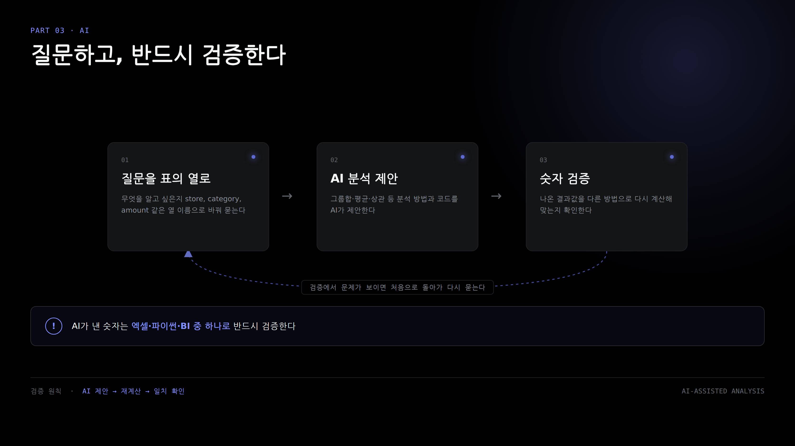
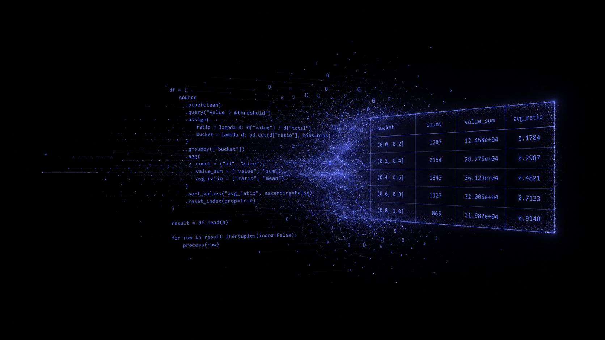
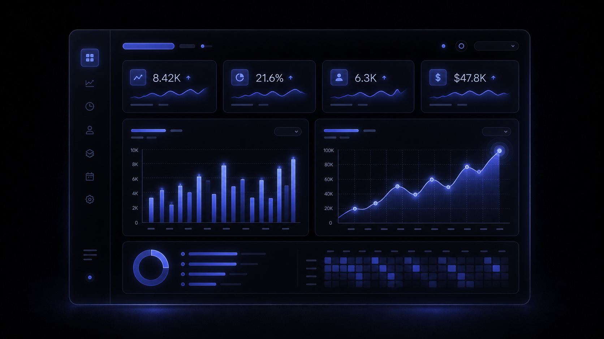
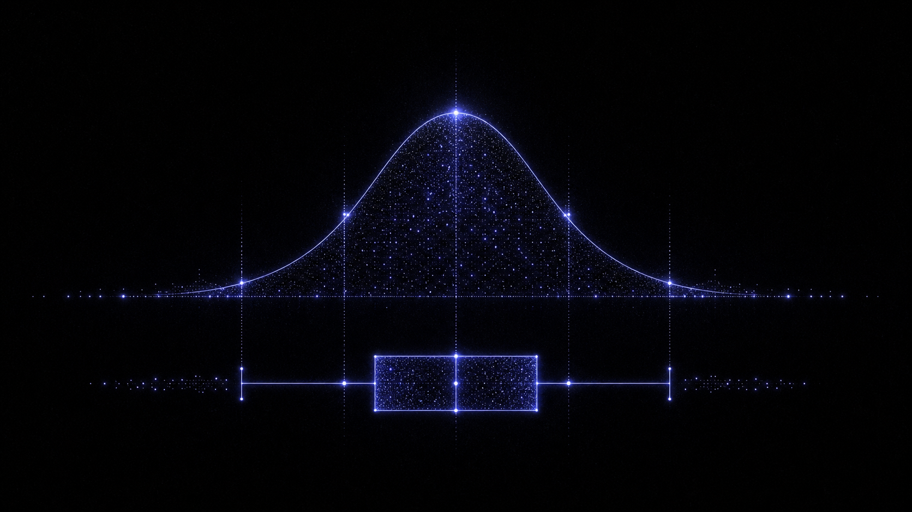

엑셀은 표를 정리하는 데는 좋지만 질문에 답하려는 순간 한계가 드러납니다. AI는 빠르게 답을 내놓지만 검증하지 않으면 위험하고, 파이썬은 강력한 만큼 혼자 배우면 막막합니다. 이 코스는 그 사이의 순서를 하나씩 이어 놓았습니다 — 엑셀에서 다진 감각이 AI를 검증하는 눈이 되고, 그 눈이 파이썬 코드를 읽는 힘이 되고, 그 힘이 BI 대시보드로 완성되도록.

tidy 데이터의 원칙, 피벗테이블, VLOOKUP과 조건부 집계까지. 이미 쓰던 도구로 데이터를 읽는 감각부터 다집니다.

엑셀 파일을 그대로 올려 자연어로 묻습니다. 좋은 프롬프트를 설계하고, AI가 낸 답의 환각과 계산 오류를 검증하는 습관을 함께 익힙니다.

Colab과 Pandas로 넘어와 정제·집계·재구조화·시각화를 코드로 직접 다룹니다. 행이 늘어나도 엑셀처럼 관리가 무거워지지 않습니다.

Power BI와 Looker Studio로 데이터 모델을 설계하고, 상호작용하는 대시보드를 만들어 결과를 공유 가능한 형태로 배포합니다.
엑셀과 AI 사이, 통계적 직관을 다지는 시간이 따로 있습니다. 평균과 중앙값이 갈라지는 지점, 상관과 인과를 혼동하기 쉬운 순간, 그룹을 나누면 뒤집히는 심슨의 역설까지 — 강남구 아파트 실거래 데이터로 직접 확인합니다.

첫 시간에는 도구 지도를 함께 그리고 수업 환경을 점검합니다. 그 다음부터 여섯 파트가 이어지며, 파트가 바뀔 때마다 난이도는 한 번씩 리셋됩니다 — 새 도구를 처음 만나는 부담을 줄이기 위해서입니다.
tidy 원칙에서 피벗테이블, VLOOKUP까지. 엑셀 사용자가 이미 아는 도구로 데이터 감각을 다집니다.
분포와 이상치, 상관과 인과의 구분, 심슨의 역설까지 익히며 숫자를 의심하는 눈을 기릅니다.
엑셀 파일을 AI에 올려 자연어로 분석하되, 프롬프트 설계와 결과 검증 습관을 함께 배웁니다.
Colab 기초부터 정제·집계·시각화까지. 새 도구로 진입하며 난이도가 다시 3으로 시작됩니다.
Power BI와 Looker Studio로 대시보드를 만들고 모델링하고 배포합니다. 여기서도 도구 전환으로 난이도가 다시 시작됩니다.
쌓아온 스캐폴딩 위에서 AI, 파이썬, BI를 한 바퀴 돌리고 결과를 인사이트 보고서로 완성합니다.
각 차시는 앞선 차시에서 다진 감각 위에 쌓입니다. 파트별로 묶어 두었으니 처음부터 순서대로 읽어도 좋고, 관심 있는 파트부터 골라 봐도 좋습니다.
오리엔테이션. 데이터로 답할 수 있는 질문과 답하기 어려운 질문을 구분하고, 엑셀·AI·파이썬·BI가 분석 흐름에서 맡는 역할을 지도로 그린 뒤 수업 환경(OS, 필요한 계정, 데이터)을 점검합니다.
한 셀 한 값, 병합셀 금지 같은 tidy 원칙과 범주형·순서형·수치형 척도를 익히고, 어지러진 데이터에서 원칙이 깨진 지점을 직접 찾아봅니다.
"표를 보는 법"에서 "표에 질문하는 법"으로 넘어갑니다. 행·열·값 구성과 집계함수로 가장 잘 팔리는 시간대가 언제인지 직접 답해봅니다.
여러 표에 흩어진 실무 데이터를 VLOOKUP·XLOOKUP으로 이어붙여 매출을 계산하고, SUMIF·COUNTIF로 지역별·등급별 집계를 냅니다.
엑셀 파일을 AI 분석 도구에 업로드해 자연어로 요약·집계·추세를 요청하고, 서로 다른 AI의 답을 비교해 더 믿을 만한 쪽을 골라봅니다.
맥락·질문·출력형식 세 요소로 프롬프트를 설계하고, 설문 주관식 응답을 주제와 감성으로 분류하도록 요청합니다. 프롬프트를 세 버전으로 바꿔 재현 가능성도 함께 판단합니다.
AI가 낸 매출 수치를 엑셀 피벗테이블로 교차 확인하고, 중복·결측·표기 흔들림이 숫자를 어떻게 왜곡하는지 확인해 나만의 검증 체크리스트를 만듭니다.
엑셀에서 파이썬으로 넘어가는 첫 시간입니다. 변수, 자료형, 리스트, 딕셔너리, 조건문, 반복문을 익히며 다음 차시의 pandas 필터가 오늘의 조건문을 열 전체에 한 번에 적용하는 것임을 확인합니다.
DataFrame과 Series를 엑셀 시트와 열에 견주어 이해하고, head·info·describe로 데이터를 살핀 뒤 불리언 필터로 원하는 행만 남깁니다. 엑셀 필터가 곧 불리언 마스크라는 것이 이 차시의 핵심입니다.
결측치 처리, IQR 이상치, 타입 변환, 중복 제거, 문자열 처리에 더해 한글 CSV의 cp949 인코딩 문제와 날짜 파싱까지 정제 전 과정을 다룹니다. 정제는 결국 계산 가능한 표로 만드는 일입니다.
groupby, merge, pivot_table, melt를 익힙니다. 231개 열짜리 인구 데이터를 melt로 세로형으로 바꾸고, 서울 상가업소를 업종별로 집계하며, 생활인구를 자치구 단위로 묶어보는 미션으로 마무리합니다.
한글 폰트 설정부터 시작해 지하철 데이터는 히트맵으로, 아파트 데이터는 산점도와 추세선으로, 소비자물가는 시계열 라인차트로 표현합니다. 정제 결과를 저장해 BI로 넘기는 핸드오프까지 다룹니다.
Power BI Desktop을 설치하고 CSV를 불러와 막대, 꺾은선, KPI 카드로 첫 대시보드 페이지를 만듭니다. Mac 사용자는 S18의 Looker Studio 경로로 대체됩니다.
S04에서 VLOOKUP으로 풀었던 문제를 다른 방식으로 풉니다. 주문 테이블을 중심에 둔 스타 스키마로 관계를 맺고, 다음 차시의 전월 대비 계산을 위한 날짜 차원 테이블을 만듭니다.
슬라이서와 드릴다운으로 상호작용하는 대시보드를 만들고, 합계와 비율은 물론 전월 대비 증감까지 계산하는 DAX 측정값을 익힙니다.
Power BI Service와 Copilot은 조직 계정과 유료 결제가 필요해, 무료 개인 계정으로 갈 수 있는 Looker Studio를 표준 경로로 삼습니다. CSV를 연결해 보고서를 만들고 공유 링크까지 검증합니다.
카페 매출, 주문, 설문, 인사 데이터 같은 합성 데이터로 개념을 깨끗하게 익힌 다음, 실제 한국 공공데이터로 그 개념이 현실에서 어떻게 작동하는지 확인합니다. 배달콜과 기온의 상관이 실제로는 r≈0.015로 무상관이라는 사실도, 강남구와 마포구의 점포 수 격차도 — 전부 검증을 거친 실측치입니다.
대여소 간 이동, 시간대별 대여 이력 약 20만 행. 대여소 위경도가 포함된 마스터 데이터와 함께 씁니다.
공공자전거 · OD 데이터역명과 시간대별 승하차 인원 약 20만 행. 여러 해에 걸친 이력으로 시간대별 혼잡 패턴을 히트맵으로 그립니다.
서울교통공사강남구·해운대구의 매매·전월세 실거래 3,754행. 전용면적과 거래금액의 상관을 확인하는 핵심 실습 데이터입니다.
국토교통부업종 대·중·소분류가 붙은 상가업소 약 11.9만 행. 자치구별 음식점 밀집도를 비교하는 캡스톤의 핵심 소재입니다.
소상공인시장진흥공단자치구와 시간대 기준 약 10.9만 행. 대용량 데이터를 groupby로 다루는 감각을 익히는 실습에 씁니다.
서울 열린데이터광장서울 지점의 기온·강수·습도 4개년 일별 관측. 배달콜, 매출과의 상관을 직접 계산해보는 데이터입니다.
기상청소비자물가지수, 환율, 실업률의 월별 시계열. 시계열 라인차트를 그리는 시각화 실습에 씁니다.
FRED법정동 단위 231개 열의 wide 포맷 데이터. melt로 세로형으로 바꾸는 재구조화 실습의 소재입니다.
행정안전부 · KOSIS사고일시, 시군구, 사상자 수가 담긴 사고 기록. 지역별 위험도를 비교하는 참고 데이터로 활용됩니다.
도로교통공단 TAAS장르, 배급사, 관객수가 담긴 영화 데이터. 프롬프트로 텍스트를 분류하는 실습에 선택적으로 씁니다.
KOBIS · DACON30초 소개 영상데이터 리터러시 with AI · 16:9